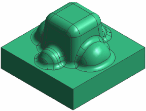
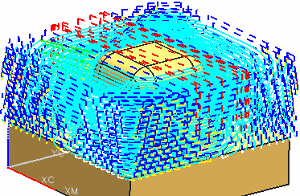

Open mnf10_proj_1_setup_1.

Choose Start→Manufacturing.
In the Operation Navigator, right-click in the background and choose Geometry View.
Right-click again in the background and choose Expand All.
In the Operation Navigator, right-click WORKPIECE and choose Replay.
This Zlevel Milling operation performs the initial rough cuts.

You will create four Fixed Axis Surface Contouring operations that use the Area Mill drive method to semi-finish and finish the part.